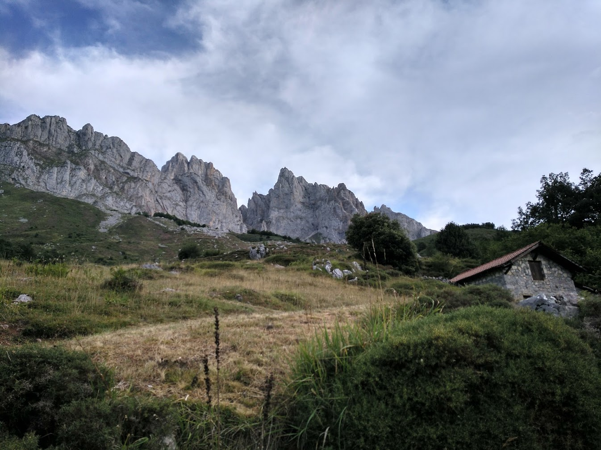

About
Hi!
My name is Ignacio Cortizo Pol (or Nacho, just Nacho). I was born in Vigo a lovely place in the North West of Spain. During the day, I work as graphics programmer at TT Games. My hobbies include rocketry, electronics, sailing, cooking and trekking.
If I had to list my top movies that would be: Gladiator, Interstellar, 2001: space odyssey, Moana, White Squall, Master and Commander, Guardians of the Galaxy Vol1, Lord of the Rings -ALL- and Start Wars(1-3 sorry old people). In terms of cartoons/anime: Steins;Gate, Avatar the last airbender, Shingeki no Kyojin and Sword Art Online S1.
I studied Games Programming in Valencia, Spain and then came to the UK to finish my BSc. During the last year of my studies, I focused mainly in graphics. After this, I started working at Simul Software, there I worked with TrueSky, a volumetric cloud rendering plugin for games. I implemented the DX12, OpenGL and Switch rendering back-ends. To support this I extended our in-house shader cross-compiler. After Simul, I moved to Wilmslow to start workign as Junior Render Tech Programmer at TT Games (where I work at this moment). Some things I implemented include: tessellation support, histogram exposure, memory profiling tools, probes…
